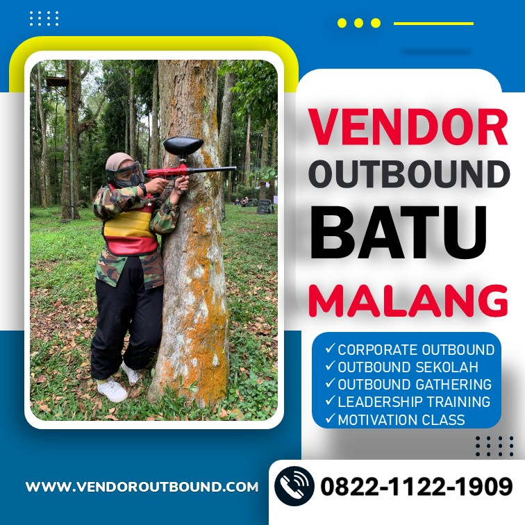

Rekomendasi Lokasi Outbound Sejuk di Batu Malang untuk Team Building
Temukan lokasi outbound sejuk terbaik di kawasan pegunungan Batu Malang yang cocok untuk kegiatan team building perusahaan Anda.
Baca Selengkapnya